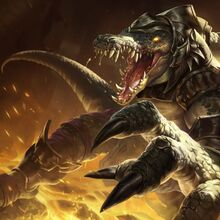

El antiguo Imperio de Shurima
En el pasado, Shurima fue el imperio mas poderoso de todo Runaterra, llegando a conquistar una gran parte del territorio, todo esto gracias a unos soldados con poderes asombrosos, conocidos como Ascendidos, personas que tras dar un gran servicio al imperio y soportar un duro ritual, se convertian en unas deidades guerreras capaces de acabar uno solo con ejercitos enteros. Lamentablemente, sus dias acabaron cuando el aquel entonces joven emperador fue traicionado por su hermano adoptivo, quien era un esclavo el cual no sabia que su querido hermano iba a liberar en cuanto la ceremonia acabase.
Algunos de los campeones mas importantes son:
|  |
|---|